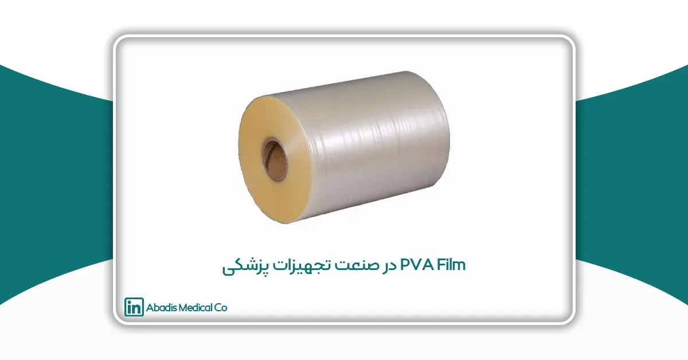
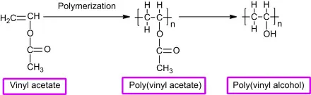
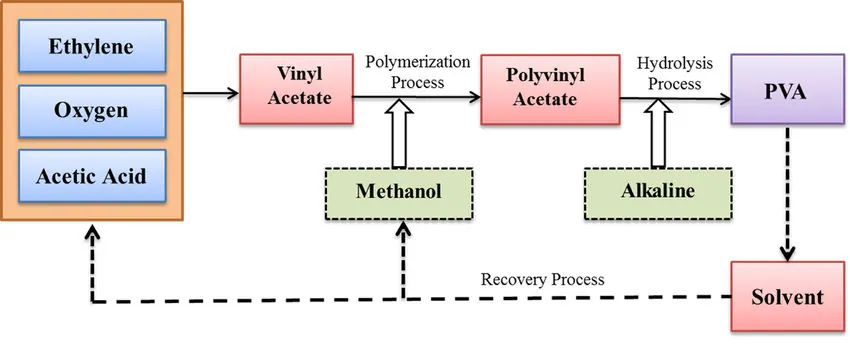

مقدمه
فیلم پلیوینیل الکل (PVA) به عنوان یک ماده پیشرفته که به دلیل ویژگیهای قابل توجهی مانند حلالیت در آب و تجزیهپذیری در صنایع مختلف مورد توجه قرار گرفته است. این فیلم ابتدا برای کاربردهای صنعتی استفاده میشد، اما امروزه در صنایع گوناگونی مانند بستهبندی، کشاورزی، نساجی و بهویژه حوزه پزشکی جایگاه ویژهای پیدا کرده است.
با افزایش تقاضای جهانی برای موادی که هم عملکرد بالا و هم پایداری محیطی دارند، فیلم PVA به عنوان یک راهحل چندمنظوره و سازگار با محیط زیست یاد میشود. این مقاله به بررسی ویژگیهای منحصربهفرد فیلم PVA و کاربردهای متنوع آن به ویژه در صنعت پزشکی و تجهیزات پزشکی میپردازد.
تاریخچه فیلم PVA
پلیوینیل الکل (PVA) برای اولین بار در اوایل قرن بیستم توسط شیمیدانان آلمانی زمانیکه که به دنبال تولید پلیمرهای مصنوعی با خواص منحصر به فرد بودند؛ استفاده و کشف شد. تحقیقات اولیه بر روی تولید یک پلیمر محلول در آب که میتواند در صنایع نساجی و چسبها استفاده شود، متمرکز بود. با گذشت زمان و پیشرفت دانش شیمی پلیمر، PVA به طور مداوم تصفیه و به فرم فیلم توسعه یافت. این فیلم به سرعت به دلیل ویژگیهای منحصر به فرد خود، مانند توانایی حل شدن در آب و مقاومت بالا مورد توجه قرار گرفت. تا اواسط قرن بیستم، فیلم PVA در کاربردهای صنعتی مختلف به کار گرفته شد و زمینه را برای پذیرش گسترده آن در بخشهای متعدد فراهم کرد.
تحقیقات اولیه درباره فیلم PVA عمدتاً بر روی پتانسیل آن به عنوان مادهای محلول در آب برای استفاده در اندازهگیری منسوجات و پوششهای کاغذ متمرکز بود. مطالعات اولیه به ویژگیهای چسبندگی قوی و سهولت استفاده در مصارف مبتنی بر آب اشاره کردند. تا دهه 1960، پژوهشگران به بررسی استفاده از فیلم PVA در بستهبندی، به ویژه برای کاربردهای یکبار مصرف و زیستپذیر پرداختند.
فیلم PVA چیست؟
فیلم PVA، یا فیلم پلیوینیل الکل، نوعی ماده پلاستیکی مصنوعی و محلول در آب است که از پلیوینیل الکل (PVA) ساخته میشود. این فیلم به دلیل قابلیت حل شدن در آب، در کاربردهای مختلفی که قابلیت تجزیهپذیری و ایمنی محیطی اهمیت دارد، مورد استفاده قرار میگیرد.
پلیوینیل الکل (PVA) یک پلیمر مصنوعی ترموپلاستیک است که برخلاف بسیاری از پلیمرهای مصنوعی، از طریق پلیمریزاسیون به دست نمیآید بلکه از طریق هیدرولیز پلیوینیل استات (PVAc) تهیه میشود. به دلیل حضور گروههای هیدروکسیلی، پلیمرهای هیدروفیلی مانند PVA و کامپوزیتهای آن که عمدتاً با بیوپلیمرها ساخته میشوند. هیدروژلهای PVA در کاربردهای متعددی مانند غشاهای فیلم الکتریکی برای جداسازی شیمیایی، حذف عناصر و رنگها، جذب یونهای فلزی، سلولهای سوختی و بستهبندی مورد مطالعه قرار گرفتهاند. علاوه بر کاربردها در زمینه مهندسی، PVA مانند دیگر پلیمرهای مصنوعی در پزشکی و حوزههای زیستی نیز کاربرد دارد.
ترکیب شیمیایی و خواص فیلم PVA
PVA یک پلیمر مصنوعی است که از پلیمریزاسیون وینیل استات و سپس هیدرولیز پلیوینیل استات تولید میشود. درجه هیدرولیز را میتوان کنترل کرد تا PVA با سطحهای مختلف حلالیت در آب و خواص مکانیکی تولید شود. فیلم PVA عمدتاً از گروههای هیدروکسیل (-OH) تشکیل شده است که به حلالیت آن در آب کمک میکنند. علاوه بر این، ساختار پلیمری آن امکان تشکیل فیلمهای عالی، انعطافپذیری بالا و مقاومت در برابر روغنها و حلالها را فراهم میکند. این ویژگیها فیلم PVA را به یک ماده چندمنظوره تبدیل میکند که برای طیف گستردهای از کاربردها، از بستهبندی گرفته تا صنعت پزشکی و تجهیزات پزشکی، مناسب است.

فرآیند تولید فیلم PVA
تولید فیلم PVA با پلیمریزاسیون مونومرهای استات وینیل آغاز میشود و سپس فرآیند هیدرولیز کنترلشده برای تبدیل پلیوینیل استات به پلیوینیل الکل انجام میشود. محلول PVA حاصل سپس به صورت ورقهای نازک برای تشکیل فیلم ریخته یا اکسترود میشود. ضخامت، حلالیت و ویژگیهای مکانیکی فیلم میتواند با تغییر غلظت محلول PVA، درجه هیدرولیز و شرایطی که فیلم در آن خشک و پردازش میشود، تنظیم شود. پیشرفتهای تکنیکی در تولید، امکان تولید فیلمهای PVA با ویژگیهای خاص و متناسب با نیازهای صنعتی خاص را فراهم کرده است.

ویژگیهای فیلم PVA
- حلالیت در آب
- تجزیه پذیر
- شفافیت
- چسبندگی
- پایداری حرارتی
- زیست تخریب پذیر
کاربردهای فیلم PVA
۱. صنعت بستهبندی: یکی از رایجترین کاربردهای فیلم PVA در بستهبندی، به ویژه برای مصارف یکبار مصرف است. این فیلم به طور گستردهای برای تولید کیسههای محلول در آب برای محصولاتی مانند مواد شوینده و قرصهای ماشین ظرفشویی استفاده میشود. این کیسهها به طور کامل در آب حل میشوند. توانایی ایجاد فیلمهایی با پروفایلهای حلالیت دقیق به تولیدکنندگان این امکان را میدهد تا بستهبندیهایی طراحی کنند که معیارهای عملکرد خاصی را برآورده کرده و در عین حال تاثیرات محیطی را کاهش دهند.
۲. کشاورزی: یکی از کاربردهای برجسته فیلم PVA در کشاورزی تولید نوارهای بذر تجزیهپذیر است. این نوارها که حاوی بذرها هستند، پس از کاشت در خاک تجزیه میشوند و نیازی به حذف دستی ندارند و همچنین زبالهها را کاهش میدهند. علاوه بر این، فیلم PVA برای ایجاد کپسولهای کود با انتشار کنترلشده استفاده میشود که به تدریج مواد مغذی را آزاد کرده و به بهبود سلامت خاک و کاهش رواناب محیطی کمک میکند.
۳. فیلم PVA در صنعت پزشکی و تجهیزات پزشکی: صنعت پزشکی به طور چشمگیری از مزایای فیلم PVA استفاده کرده و ویژگیهای منحصر به فرد آن را برای کاربردهای مختلف استفاده میکند:
- سیستمهای تحویل دارو: حلالیت در آب و زیستسازگاری فیلم PVA آن را به گزینهای عالی برای استفاده در سیستمهای تحویل دارو تبدیل کرده است. محققان فیلمهای مبتنی بر PVA را برای پوشش داروها توسعه دادهاند که امکان انتشار کنترلشده و پایدار دارو را فراهم میکند. این فیلمها در دستگاه گوارش یا سایر نواحی هدفمند حل میشوند و دوز دقیقی را ارائه داده و عوارض جانبی احتمالی را کاهش میدهند.
- مراقبت از زخم: پلیوینیل الکل (PVA) پلیمری است که به طور گستردهای در فیلمهای مورد استفاده برای پانسمان زخم کاربرد دارند. داروهای مختلفی به فیلمهای PVAاضافه شدهاند تا فعالیت بهبود زخم را افزایش دهند. همچنین پانسمانهای مبتنی بر PVA تجزیهپذیر هستند.
- بستهبندی تجزیهپذیر برای لوازم پزشکی: فیلم PVA برای تولید بستهبندی تجزیهپذیر برای لوازم پزشکی، مانند ابزارهای جراحی یکبار مصرف و بستهبندیهای استریل استفاده میشود. این کاربرد به کاهش انباشت زبالههای پزشکی کمک کرده و در حفظ محیط زیست در بخش بهداشت و درمان همراه است.
- کاربرد فیلم PVA در کیسه ساکشن یکبار مصرف: پودر جاذب موادی هستند که میتوانند مقدار زیادی مایع را نسبت به جرم خود جذب و نگه دارند. پودر جاذب بهطور گستردهای در محصولاتی مانند پوشک، کیسه ساکشن یکبار مصرف، محصولات پزشکی، بهداشتی و در کاربردهای صنعتی مختلف استفاده میشوند.
در صنعت پزشکی، کیسه ساکشن یکبار مصرف بهطور گستردهای در جراحیها و محیطهای بالینی برای جمعآوری مایعات بدن، خون و سایر ضایعات مایع در طول عملهای جراحی استفاده میشوند. این کیسهها باید بهداشتی، ضد نشت و آسان برای دفع ایمن باشند. فیلم پلیوینیل الکل (PVA) در بسته بندی پودر جاذب داخل کیسه ساکشن یکبار مصرف به دلیل ویژگیهای منحصر به فرد خود استفاده میشود.
فیلم PVA برای ایجاد بستههای پودر جاذب داخل کیسه ساکشن یکبار مصرف آبادیس استفاده شود. هنگامی که در معرض رطوبت قرار میگیرد، فیلم PVA حل میشود و به پودر جاذب اجازه میدهد مایع را جذب کند.
- حلالیت در آب: فیلم PVA قابلیت حل شدن در آب را دارد؛ پس از استفاده، کیسه میتواند در آب قرار گیرد که در آن فیلم PVA حل میشود، خطر آلودگی را کاهش داده و فرآیند دفع را آسانتر و ایمنتر میسازد.
- رهاسازی کنترلشده: فیلم PVA میتواند برای ایجاد بستهها یا ساشههایی که پودر جاذب را محصور میکنند، استفاده شود. هنگامی که در معرض رطوبت قرار میگیرد، فیلم PVA حل میشود و به پودر جاذب اجازه میدهد مایع را جذب کند. این رهاسازی کنترلشده در کاربردهایی که پودر جاذب باید فقط در حضور مایع (مانند خون و ترشحات) فعال شوند، مفید است.
- سهولت استفاده: بستهبندی پودر جاذب در ساشههای فیلم PVA باعث میشود که در کاربردهای مختلف به راحتی جابجا و دوزبندی شود. فیلم PVA در تماس با آب حل میشود و پودر جاذب را دقیقاً در جایی که لازم است بدون نیاز به پخش یا مخلوط کردن آزاد میکند.
نتیجهگیری
فیلم پلیوینیل الکل (PVA) به دلیل ویژگیهای منحصر به فرد خود از جمله حلالیت در آب، تجزیهپذیری و زیستسازگاری، به عنوان یک ماده کاربردی در صنایع مختلف به ویژه در صنعت پزشکی و تجهیزات پزشکی شناخته شدهاست. این فیلمها به طور ویژه در زمینههای مختلف پزشکی از جمله سیستمهای تحویل دارو، مراقبت از زخم، بستهبندی تجزیهپذیر برای لوازم پزشکی، و کیسههای ساکشن یکبار مصرف کاربرد دارند.
با توجه به توانایی فیلمهای PVA در حل شدن در آب ، این فیلمها در سیستمهای تحویل دارو برای انتشار کنترلشده و پایدار داروها و در مراقبت از زخم به عنوان پانسمانهای زیستتخریبپذیر کاربرد دارند. همچنین، فیلمهای PVA در تولید بستهبندیهای تجزیهپذیر برای لوازم پزشکی و در کیسه های ساکشن یکبار مصرف آبادیس برای بسته بندی پودر جاذب و رهاسازی کنترل شده آن مورد استفاده قرار میگیرند.
پیشرفتهای اخیر در تولید و بهبود فیلمهای PVA نشاندهنده توانایی این مواد در پاسخ به نیازهای مختلف در صنعت پزشکی است. با افزایش تقاضا برای مواد با عملکرد بالا و پایدار، فیلمهای PVA به عنوان یک گزینه مناسب برای جایگزینی با دیگر مواد در حوزههای مختلف پزشکی و بهداشتی شناخته میشوند. این ویژگیها، همراه با قابلیتهای تطبیقپذیری فیلمهای PVA ، آنها را به یک انتخاب برجسته و مؤثر برای کاربردهای پزشکی تبدیل کرده است.
منابع
- Biomaterials of PVA and PVP in medical and pharmaceutical applications: Perspectives and challenges
- Poly(Vinyl Alcohol) Recent Contributions to Engineering and Medicine
- Alginate/polyvinyl alcohol films for wound healing: Advantages and challenges
- A review of polyvinyl alcohol/carboxymethyl cellulose (PVA/CMC) composites for various applications